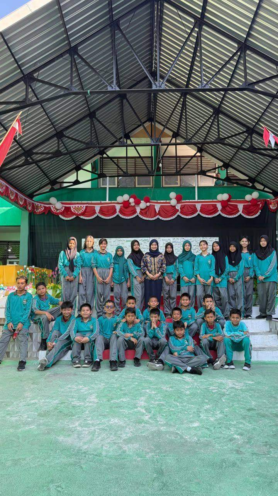

Kelas 7K, ruang kita untuk belajar dan bertumbuh.
Together we create memories. Ruang bersama untuk menyimpan jejak, jadwal, kegiatan, dan kenangan terbaik kelas 7K SMP Negeri 3 Luwuk.

Tentang Kelas 7K
Kelas 7K adalah rumah bagi 29 siswa yang belajar, bertumbuh, dan saling mendukung di SMP Negeri 3 Luwuk. Setiap hari membawa cerita baru: diskusi di kelas, kerja kelompok, latihan, tugas piket, sampai momen sederhana yang akhirnya menjadi kenangan.
Melalui website ini, kami mengumpulkan informasi penting agar mudah ditemukan oleh teman sekelas, guru, keluarga, dan siapa pun yang ingin mengenal kami. Gunakan halaman struktur untuk melihat pembagian peran, halaman jadwal untuk menyiapkan pelajaran, dan halaman piket untuk menjaga ruang kelas tetap nyaman. Galeri menjadi tempat kami merawat foto kegiatan, sementara media sosial menghadirkan kabar terbaru dari Seven K.
Informasi kelas
Informasi kelas yang dapat dipercaya
Class Seven K adalah ruang digital untuk berbagi informasi tentang kegiatan, jadwal, struktur organisasi, dan kenangan belajar di SMP Negeri 3 Luwuk. Website ini dibuat untuk memudahkan teman sekelas, guru, dan keluarga mengakses informasi penting dengan cepat dan jelas.
- Struktur kelas dan pembagian tugas
- Jadwal pelajaran dan kegiatan harian
- Kontak kelas dan tautan media sosial resmi
- Lokasi sekolah serta sumber informasi yang dapat dicek
Kehidupan Sehari-hari di 7K
Hari di kelas 7K berjalan dengan ritme yang khas. Pagi dimulai dengan doa bersama dan pemeriksaan kehadiran, lalu pelajaran bergantian sepanjang hari. Di sela pelajaran ada diskusi kelompok, presentasi di depan kelas, dan waktu istirahat yang sering berubah menjadi momen bercanda bersama.
Piket menjadi salah satu kebiasaan yang kami jaga. Setiap hari ada giliran menyapu, merapikan meja, dan memastikan ruang kelas siap dipakai keesokan harinya. Kegiatan kecil ini mengajarkan tanggung jawab dan kerja sama, dua hal yang kami latih sepanjang tahun.
Kami juga aktif di luar jam pelajaran. Ada yang mengikuti kegiatan sekolah, ada yang gemar olahraga, seni, atau menulis. Media sosial kelas menjadi tempat berbagi foto kegiatan, pengumuman tugas, dan kenangan bersama.
Kebiasaan baik kami
Datang tepat waktu dan menyiapkan buku sesuai jadwal.
Menjaga kebersihan kelas melalui piket harian.
Saling membantu saat ada teman yang kesulitan belajar.
Mendokumentasikan kegiatan kelas di galeri dan media sosial.
Tentang sekolah kami
Kelas 7K adalah bagian dari SMP Negeri 3 Luwuk, sekolah menengah pertama di Kabupaten Banggai, Sulawesi Tengah.
Alamat: Jl. Ki Hajar Dewantoro No.10, Karaton, Luwuk, Kabupaten Banggai, Sulawesi Tengah 94711.
Telepon: (0461) 21276
Galeri
Galeri Kenangan. Waktu boleh berlalu, tapi kenangan akan tetap ada. Di sini kami menyimpan setiap sudut cerita, tawa, dan perjuangan bersama sebagai satu keluarga.
Buku Tamu
Tinggalkan pesan, kenangan, atau komentar untuk kelas 7K. Cukup tulis nama dan pesanmu, tanpa perlu membuat akun apa pun.
Lokasi Sekolah, SMP Negeri 3 Luwuk
Jl. Ki Hajar Dewantoro No.10, Karaton, Luwuk, Kabupaten Banggai, Sulawesi Tengah 94711
Telepon: (0461) 21276
Plus code: 2QRQ+HP Karaton, Kabupaten Banggai, Sulawesi Tengah
Sumber informasi: Kemendikdasmen Dapodik
SMP Negeri 3 Luwuk
Kunjungi situs resmi sekolah untuk info lebih lanjut, pengumuman, dan profil sekolah.
Kontak Seven K
Ingin menyampaikan informasi, mengirim kabar, atau mengikuti kegiatan kami? Hubungi melalui akun kelas atau gunakan informasi sekolah berikut.
SMP Negeri 3 Luwuk
Telepon: (0461) 21276
Alamat: Jl. Ki Hajar Dewantoro No.10, Karaton, Luwuk, Kabupaten Banggai, Sulawesi Tengah 94711
Memuat komentar...